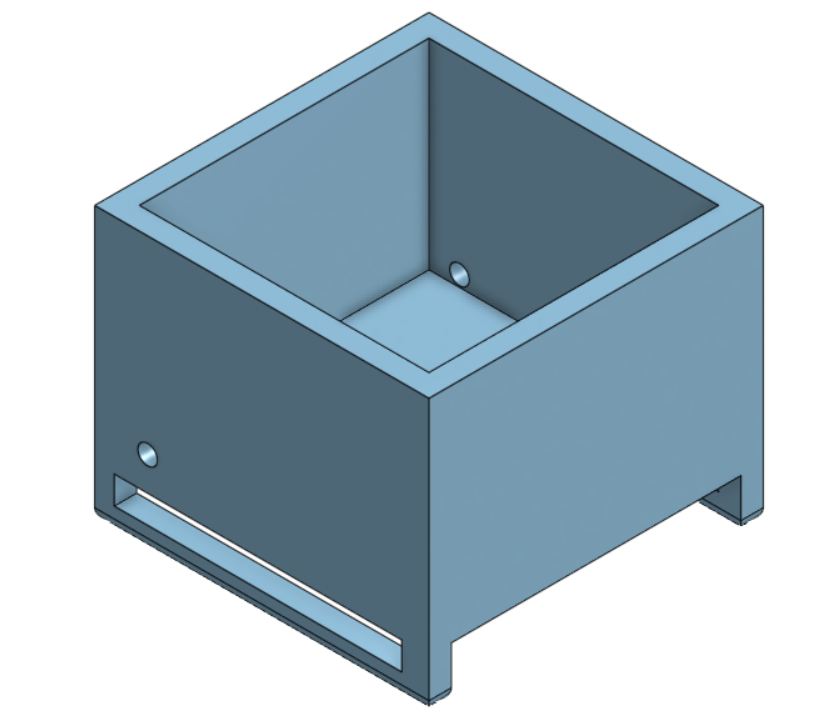
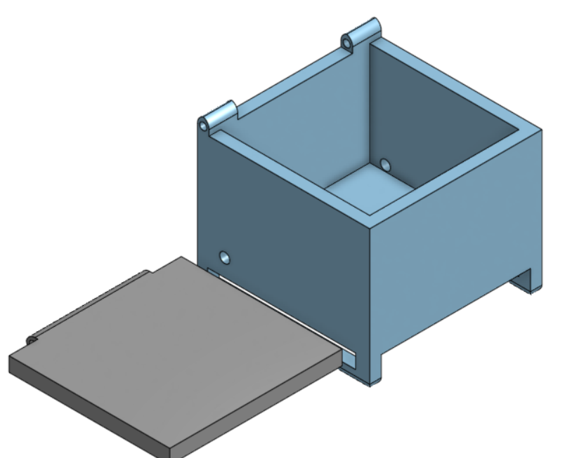
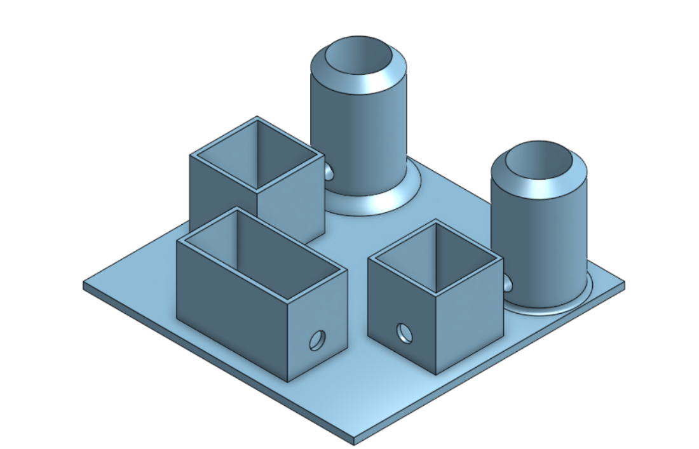
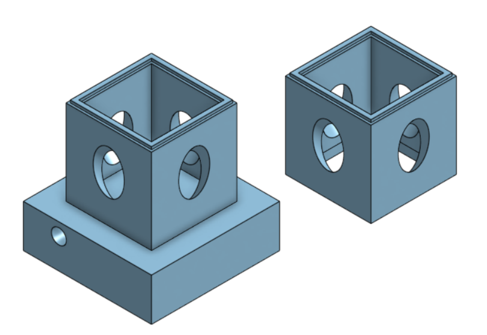
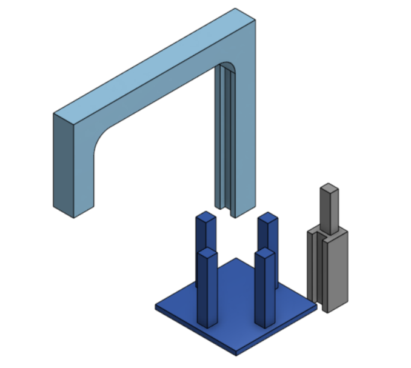
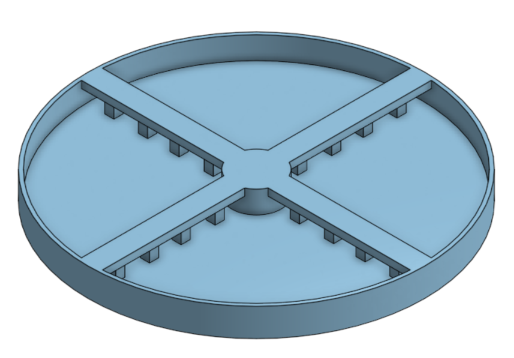
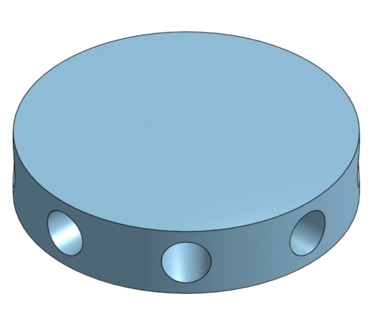
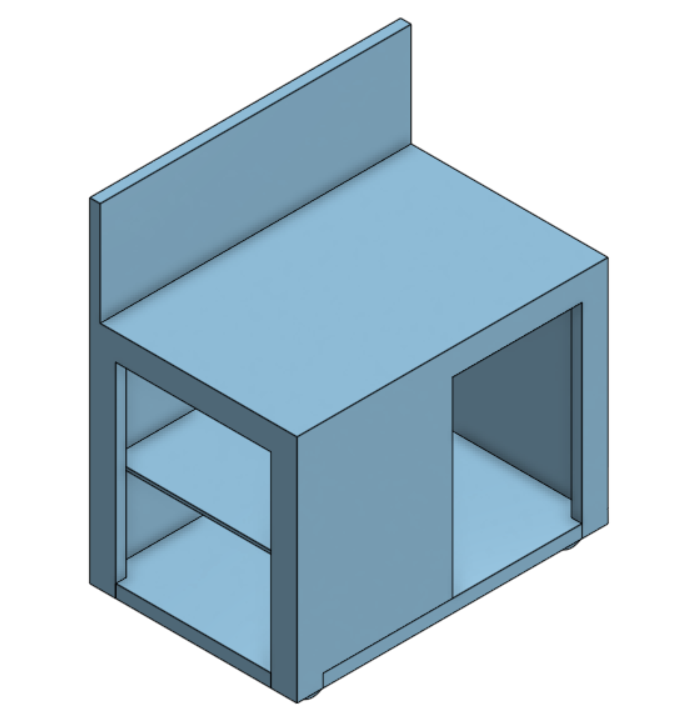
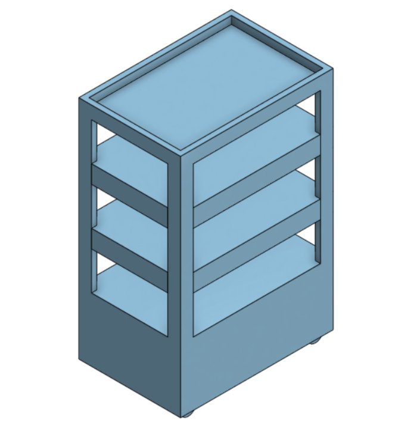
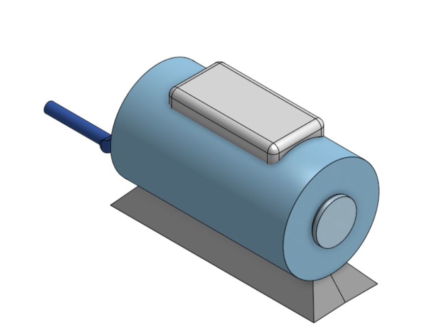

Initial Models
Grow Bin

Our second attempt at making a place for bamboo to grow at the final stage once they have been raised and rooted into the lunar regolith.
Compost Bin

The storage container where we would send the water through a mixture of compost made from human excretion and food/plants not used
Filtration

The process which we would keep the water clean and healthy full of nutrients, using a multi staged filtration method
Grow Tower

This would be the beginning stage of growing bamboo where it needs lots of care before the roots are developed. They stacked on top of each other like legos, and water was provided from the bottom up
Light System

Our modular design with went on top of the grow tower to adjust the lighting requirement for growing plants
Final Models
Base

This is where we then transfer the bamboo from the grow shelf. Replaces the grow box - much easier to work with due to height as well as space efficiency as the center is the tallest part of the dome
Rod Connector

The connector bridge holding up the frame of the structure
Work Table

A place where tools can be stored, and a place people can work on.
Growshelf

The first stage of growing bamboo, it replaced the grow tower as it is much simpler while also serving the same function
Compost

Replaced the compost bin, it has a rotating arm to mix the compost and a lid to keep the smell out
Before we built anything, we used different methods of brainstorming, like using the F.I.S.H Method, sketching initial drawings from different angles and designs, as well as brainstorming through random words and emotions and applying them to the project.